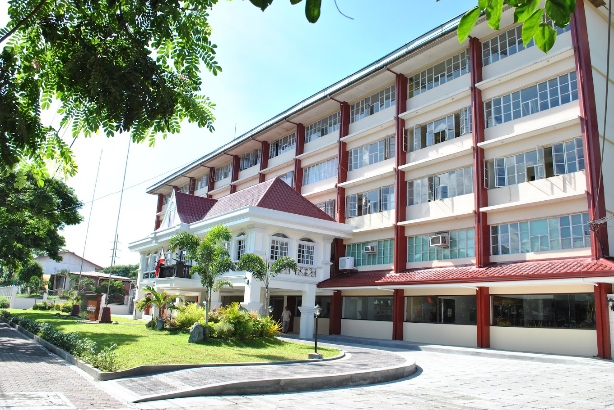
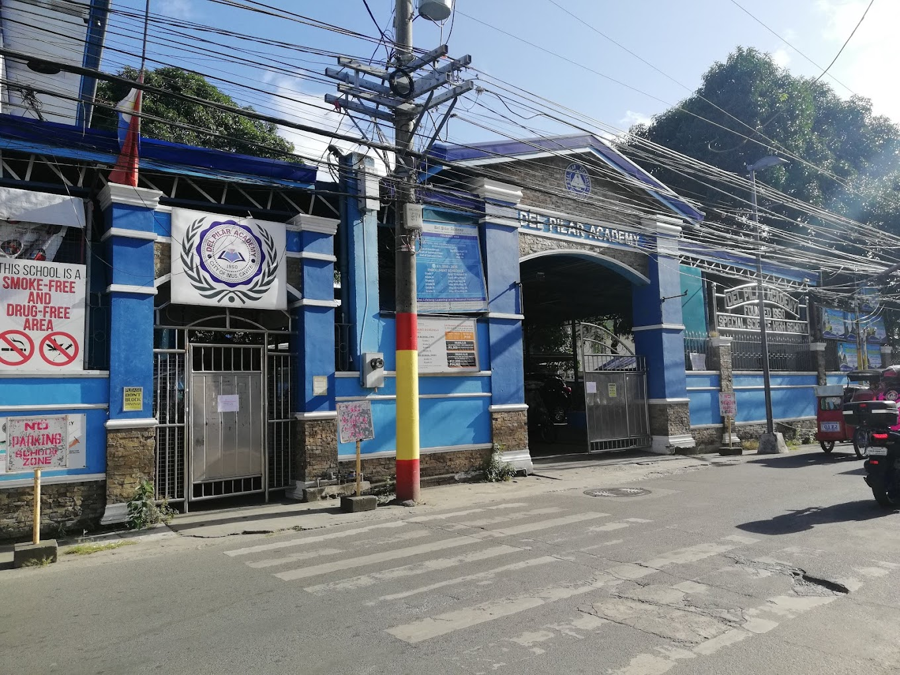
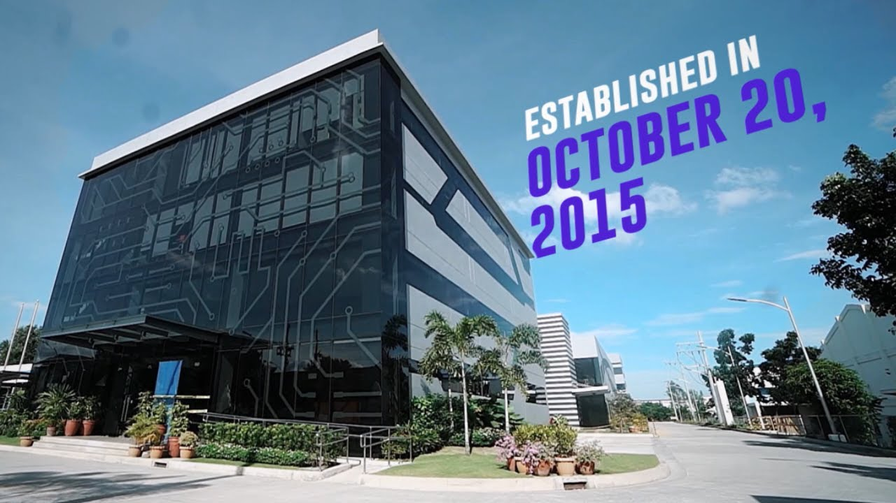

I'm Angela Christine D. Javier an optimist who aspires to be a computer scientist and
is interested in gaining knowledge about the technicalities of technology and gaming.
Efficient, reliable, and a great follower. Willing to learn more about the field through
dedicated professionals. Adamant to try anything until something works and tends to think
out of the box.
Education:
College (class of 2024)

Emilio Aguinaldo College - Cavite
BS in Computer Science
Academic Scholar
Best in Thesis
Highschool (class of 2020)

Del Pilar Academy
STEM
consistent honor and high honor student
City Scholar
Experience:
2019-2020

Creotec Philippines Inc.
work immersion and Orientation
manufacturing, testing, and measuring equipment.
Collaborated with classmates and other schools to finish
electronics-related tasks.
2021
PATTS i2RISM Hackathon
helped conceptualize an application to aid and promote tourism
by digitizing and centralizing all the travel needs and requirements.
2023
GRENELLE CENTRAL CORPORATION
was tasked to do fulfillment for E-Commerce, cable management,
filing, banking, and conceptualizing visual data
Skills:
has basic knowledge with different kinds of programming languages (Python, Java, HTML, c, and c++)
has basic knowledge with DBMS (Mysql and visual basic)
has basic knowledge with Photoshop Cs6 and DaVinci Resolve
proficient with Microsoft software (Word, PowerPoint, Excel, and Power BI)